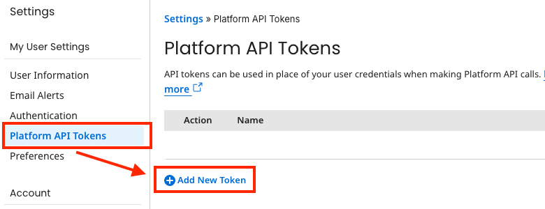
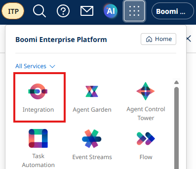
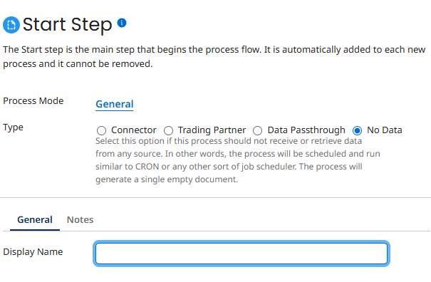
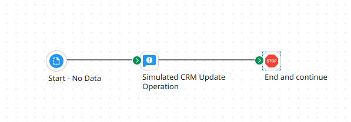
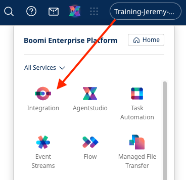
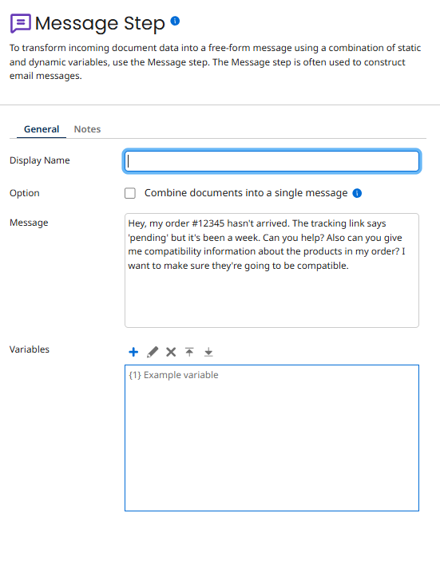
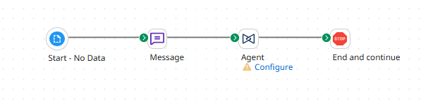
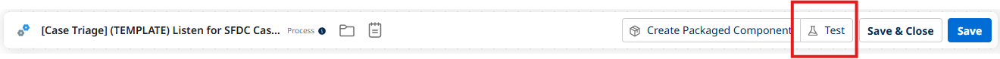

Customer Support Triage Lab
Build a Customer Support Specialist agent that handles product questions, order inquiries, address updates, and troubleshooting requests in a single conversation.
Acme, Inc. support agents must manually search disconnected systems and can't handle multi-intent inquiries. This lab builds a role-based Customer Support Agent that synthesizes information from multiple systems and handles all customer concerns in one interaction.
Canonical Source
This lab guide was authored for the Boomi Labs site. The canonical version with the latest updates can be found at https://labs.boomi.com/labs/customer-operations/customer-support-triage/intro.
Generate a Platform API Token
- Settings → Platform API Tokens → Create token named Agentstudio. Save token and Account ID.



Create Testing Environment and Sample CRM Integration
- Integration → Manage → Runtime Management → + New Environment named 'Agent Testing' (Production) → + New Basic Runtime.


- Create Simulated CRM Update process: Start → Notify (Simulated CRM Update Operation) → Stop.




- Name process: [builderInitials] Simulated CRM Update. Package, Deploy, Done.
Part 1: Create Tools for Your Customer Support Agent
Build 5 flexible tools: Get Product Information, Query Order Status, Update Customer Information, Search Knowledge Base, and Update Case with Comment.
Each tool uses optional parameters and clear descriptions to enable role-based flexibility. Create each as an API Tool in Agentstudio → Agent Garden → Tools, connecting to your API endpoints with Basic Authentication.
Key tool details: • Get Product Information: optional product code, category, compatibility parameters • Query Order Status: handles multiple search methods and natural language variations • Update Customer Information: modifies contact details with governance controls • Search Knowledge Base: finds troubleshooting articles • Update Case with Comment: writes proposed responses back to the CRM
Part 2: Build Your Customer Support Agent with AI
Design the Customer Support Specialist role using Build with AI, attach tools, configure guardrails.
Create Agent with Build with AI
- Agent Designer → Agents → New Agent → Build with AI. Enter goal: Build a multi-intent customer support specialist.
- Name: Customer Support Agent [builderInitials] | Voice: Professional
Attach Tools to Tasks
- Ensure 4 tasks: Research case, Update customer records, Generate response, Document resolution.
- Attach appropriate tools to each task based on capability grouping.
Configure Guardrails
- Block: financial decisions, sensitive data disclosure. Add denied topics for security.
Test Multi-Intent Handling
- Test prompt: Hey, my order #12345 hasn't arrived. The tracking link says pending but it's been a week. Can you help? Also can you give me compatibility information about the products in my order?
- Observe how agent handles both intents simultaneously. Deploy when satisfied.
Part 3: Embed Your Agent into Business Processes
Integrate your Customer Support Agent into an event-driven workflow.
Configure Agent Control Tower
- Agentstudio → Agent Control Tower → Manage Providers → Add Account with your credentials.


Build the Integration Process
- Click waffle menu → Integration → Build → New Process → No Data.


- Add Message step with test customer message.

- Add Agent step → select Customer Support Agent → Generate Configuration → paste Platform API Token.

- Add End and Continue step. Save.

- Test the process.
